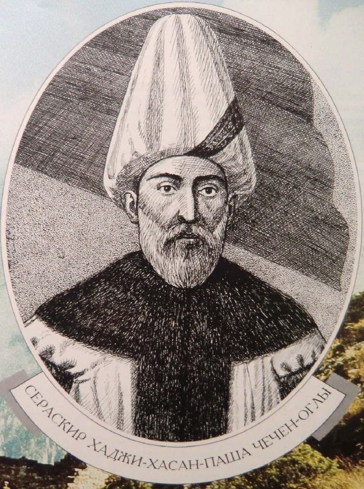
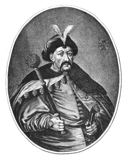
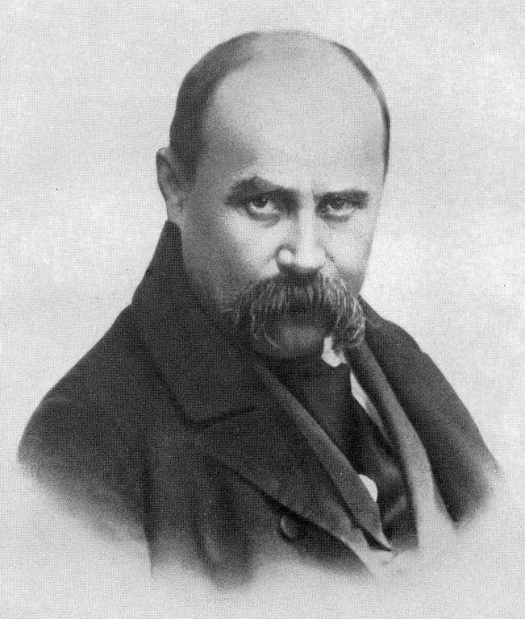
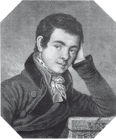
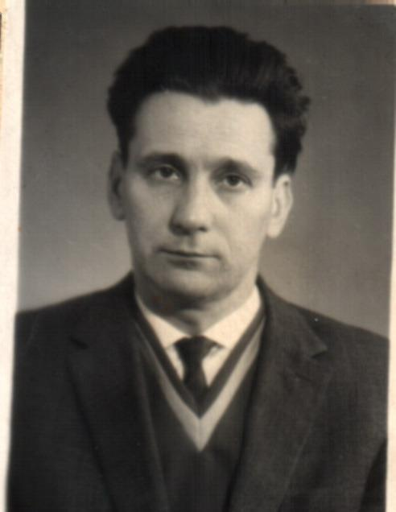
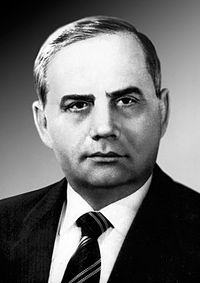
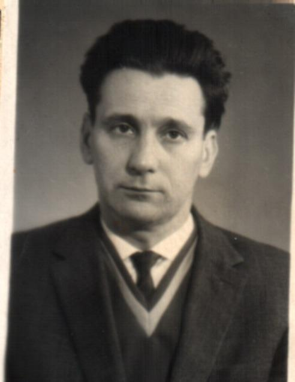
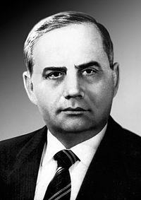

Пам'ятки України
Історичні персоналіїї
Від Київької Русі до сучасності
Виникнення та розквіт Київської Русі
Київська Русь за часів роздробленості
Галицько- Волинська держава
Культурний розвиток у ІХ - ХІV ст.
Українські землі у складі Великого князівства Литовського
Українські землі в другій половині ХVІ ст.
Українські землі в першій половині ХVІІ ст.
Національно- визвольна війна укр. народу сер. ХVІІ ст.
Українські землі в 60—80-ті рр. XVII ст.
Українські землі наприкінці ХVІІ – першої половини ХVІІІ ст.
Українські землі в другій половині XVIII ст.
Укр. землі у складі Рос. імперії наприкін. ХVІІІ – у І пол. ХІХ ст.
Західноукраїнські землі наприкінці ХVІІІ – у І половині ХІХ ст.
Культура України кінця ХVІІІ – першої половини ХІХ ст.
Укр. землі у складі Російської імперії в ІІ половині ХІХ ст.
Західноукр. землі у складі Австрійської імперії у ІІ пол. ХІХ ст.
Культура України в другій половині ХІХ – початку ХХ ст
Українські землі у складі Російської імперії на початку ХХ ст.
Західноукраїнські землі на початку ХХ ст.
Україна в Першій світовій війні
Українська революція
Україна в боротьбі за збереження державної незалежності
Українська СРР в умовах нової економічної політики
Радянська модернізація України
Західноукраїнські землі
Україна під час Другої світової війни
Післявоєнна відбудова і розвиток України в 1945 — поч.50-х
Україна в умовах десталінізації
Україна у період загострення кризи радянської системи
Розпад Рад. Союзу і відродження незалежності України
Україна в умовах незалежності


А. Шептицький/h3>
Виникнення та розквіт Київської Русі
Рюрик варяжський
Аскольд і Дір
Князь Олег "Віщий"
Князь Ігорь Рюрикович
Княгиня Ольга
Князь Святослав Ігоровия
Князь Ярополк Святославович
Князь Володимир Святославович "Великий"
Князь Ярослав Володимирович "Мудрий"
Київська Русь за часів роздробленості
Триумвірат Ярославичів
Князь Володимир Всеволодович "Мономах"
Галицько- Волинська держава
Князь Ярослав Володимирович "Осмомисл"
Князь Роман Мстиславович
Данило Романович "Галицький"
Юрій І Львович
Юрій ІІ Болеслав
Культурний розвиток у ІХ - ХІV ст.
Нестор Літописець
Іконописець Алімпій
Метрополит Іларіон
Українські землі у складі Великого князівства Литовського
Хаджі Гірей
Юрій Дрогобич
Костянтин Іванович Острозький
Василь Костянтинович Острозький
Українські землі в другій половині ХVІ ст.
Іван федоров
Герасим Смотрицький
Перший гетьман Дмитро Вишневецький "Байда"
Криштофор Косинський
Українські землі в першій половині ХVІІ ст.
Гетьман Петро Коношевич Сагайдачний
Петро Могила
Йов Борецький
Іпатій Потій
Гетьман Марко Жмайло
Гетьман Тарас Трясило
Гетьман Іван Сулийма
Гетьман Павло Бут
Гетьман дмитро Гуня
Національно- визвольна війна укр. народу сер. ХVІІ ст.
Гетьман Богдан Хмельницький
Полковник Іван Богун
Отаман Іван Сірко
Українські землі в 60—80-ті рр. XVII ст.
Гетьман Іван Виговський
Гетьман Павло Тетеря
Гетьман Іван Брюховецький
Гетьман Петро Дорошенко
Гетьман Дем'ян Многогрішний
Гетьман Юрій Хмельницький
Українські землі наприкінці ХVІІ – першої половини ХVІІІ ст.
Гетьман Іван Мазепа
Гетьман Іван Скоропадський
Гетьман Пилип Орлик
Гетьман Данило Апостол
Гетьман Павло Полуботок
Українські землі в другій половині XVIII ст.
Останній гетьман Кирило Розумовський
Ф. Прокопович
П. Калнишевський
Г. Сковорода
М. Березовський
Укр. землі у складі Рос. імперії наприкін. ХVІІІ – у І пол. ХІХ ст.
І. Котляревський
М. Костомаров
П. Куліш
М. Гулак
Т. Шевченко
Західноукраїнські землі наприкінці ХVІІІ – у І половині ХІХ ст.
М. Шашкевич
І. Вагилевич
Я. Головацький
Л. Кобилиця
І. Могильницький
Культура України кінця ХVІІІ – першої половини ХІХ ст.
П. Гулак-Артемовський
Г. Квітка-Основ'яненко
М. Максимович
В. Каразін
Укр. землі у складі Російської імперії в ІІ половині ХІХ ст.
В. Антонович
М. Драгоманов
П. Чубинський
Б. Грінченко
Західноукр. землі у складі Австрійської імперії у ІІ пол. ХІХ ст.
Ю. Бачинський
М. Грушевський
Є. Левицький
М. Павлик
І. Франко
Культура України в другій половині ХІХ – початку ХХ ст
І. Мечніков
Д. Заболотний
Д. Яворницький
А. Кримський
Леся Українка
І. Карпенко-Карий
М. Кропивницький
М. Садовський
М. Лисенко
С. Гулак-Артемовський
М. Леонтович
С. Васильківський
М. Пимоненко
С. Крушильницька
М. Зіньковецька
Українські землі у складі Рос. імперії на початку ХХ ст.
Є. Чикаленко
С. Єфремов
С. Петлюра
М. Міхновський
Західноукраїнські землі на початку ХХ ст.
А. Шептицький/h3>
К. Трильовський
І. Боберський
А. Волошин
Україна в Першій світовій війні
К. Левицький
Д. Дорошенко

О. Бобринський
Українська революція
В. Антонов-Овсієнко
Ю. Коцюбинський
Україна в боротьбі за збереження державної незалежності
Гетьмен П. Скоропадський
Д. Вітовський
Є. Петрушевич
В. Винниченко
Х. Раковський

Ю. Тютюник

Н. Махно
Українська СРР в умовах НЕП
Л. Курбас
М. Бойчук
О. Довженко
Л. Каганович
О. Шумський
М. Хвильовий

Г. Юра
Радянська модернізація України
Гетьмен П. Скоропадський
О. Стаханов
С. Косіор
М. Скрипник
Й. Сталін
Західноукраїнські землі
Є. Коновалець
Д. Донцов

С. Бандера
А. Мельник
В. Липинський
Україна під час Другої світової війни
С. Тимошенко
М. Крипонос
С. Ковпак
О. Федоров
О. Сабуров
Р. Шухевич
О. Теліга
Післявоєнна відбудова в 1945 — поч.50-х
Д. Мануїльський
О. Гончар
Й. Сліпий
Україна в умовах десталінізації
О. Кириченко
А. Горська
І. Дзюба
Л. Костенко

Л. Лук'яненко
Є. Сверстюк/h3>
І. Світличний
В. Симоненко

Україна у період загострення кризи радянської системи
В. Марченко

С. Параджанов
М. Руденко

В. Стус

Чорновіл
П. Шелест

В. Щербицький
Розпад Рад. Союзу і відродження незалежності України
В. Івашко

І. Драч
Україна в умовах незалежності
Л. Кравчук
Л. Кучма

В. Ющенко
В. Янукович
П. Порошенко
І. Світличний
В. Симоненко
Україна у період загострення кризи радянської системи
В. Марченко
С. Параджанов
М. Руденко
В. Стус
Чорновіл
П. Шелест
В. Щербицький
Розпад Рад. Союзу і відродження незалежності України
В. Івашко
І. Драч
Україна в умовах незалежності
Л. Кравчук
Л. Кучма
В. Ющенко
В. Янукович
П. Порошенко